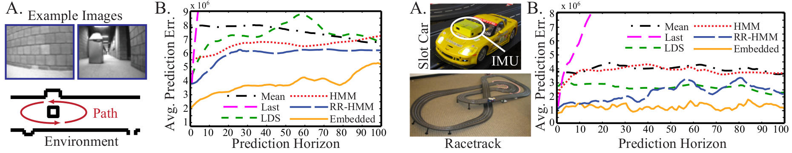
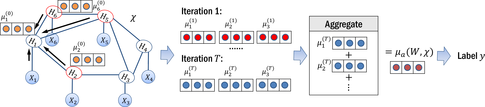
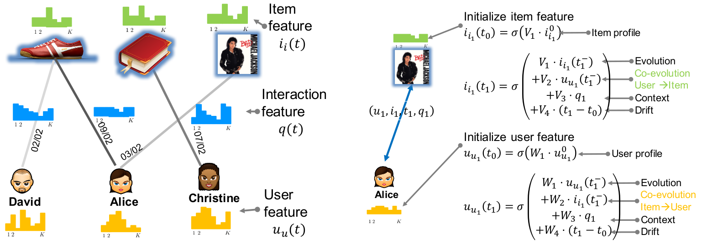
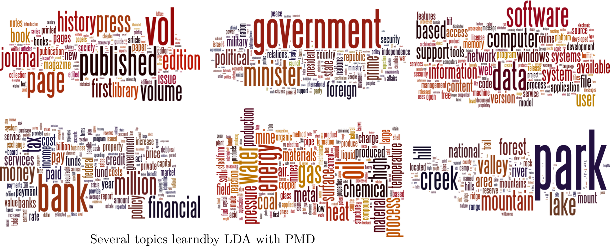
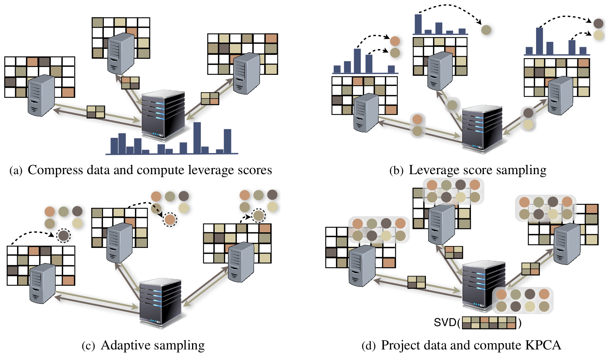
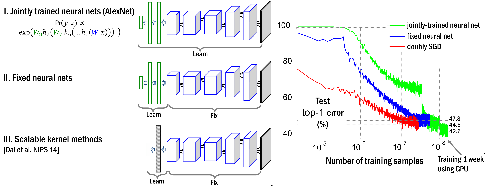
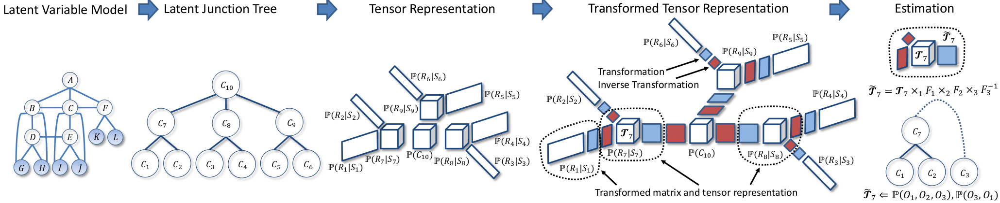
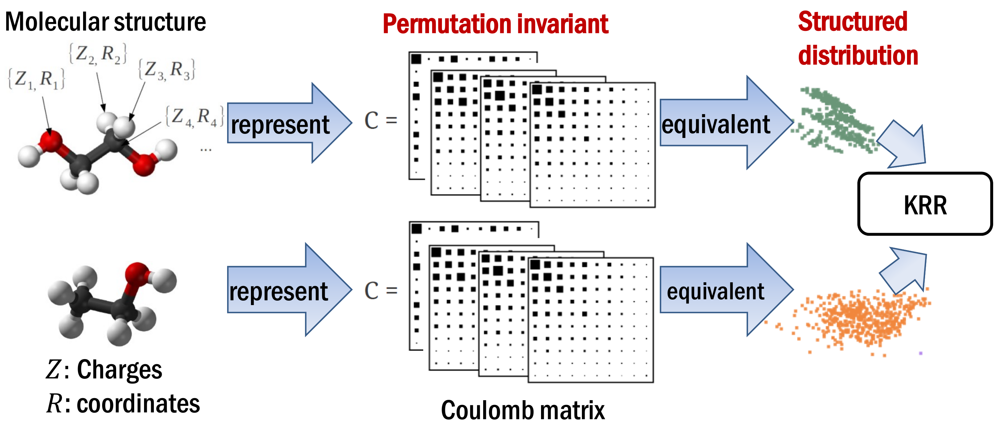
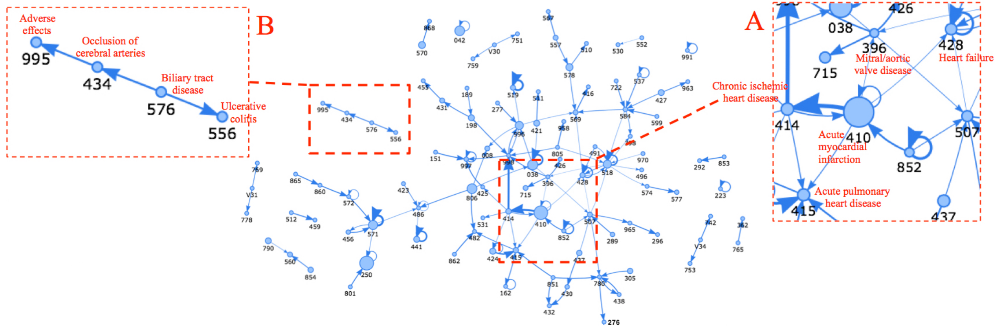
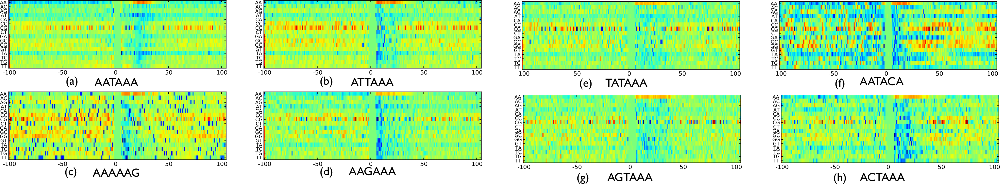

Research
Summary
My principal research interests lie in the development of efficient algorithms and intelligent systems which can learn from a massive volume of complex (high dimensional, nonlinear, multi-modal, skewed, and structured) data arising from both artificial and natural systems, reveal trends and patterns too subtle for humans to detect, and automate decision making processes in uncertain and dynamic possible world. I develop core machine learning methodology, including kernel methods, feature space embedding methods, graphical models, probabilistic and stochastic modeling, scalable algorithms, optimization algorithms and deep learning models.
I am also interested in developing machine learning models and algorithms to address interdisciplinary problems. For instance, I've conducted research on the management of information diffusion networks and recommendation systems, the discovery of time-varying gene regulatory networks, the understanding of disease progression, the extraction of topics based on online document feeds, the prediction of materials properties, and the predictive modeling of robotic systems.
My research work center around four major themes (more information here link):
- Embedding: A Learning Framework for Complex Distributions, Structures and Dynamics
- Dynamic Processes over Networks: Representation, Modeling, Learning, Inference, Optimization and Control
- Large Scale Machine Learning: Efficient Algorithms, Distributed Learning, and High Performance Computing Techniques
- Interdisciplinary Problems: Social Network Analysis, Healthcare Analytics, Computational Biology and Neuroscience, Materials Science
Embedding: A Learning Framework for Complex Distributions, Structures and Dynamics
In particular, nonlinear phenomena, complex distributions, and intricate structures and dynamics are prevalent in a diverse range of AI and machine learning problems, and learning from such higher order information is the major focus of my research. For instance, recent successes of machine learning in speech recognition, image classification and reinforcement learning are all attributed to the utilization of such higher order information. The usefulness of such information goes far beyond the above prominent examples, and it also manifests in many applications I addressed before, for instance, the analysis of evolving social information networks, the reasoning with temporal knowledge graphs, the modeling of networked dynamical systems, the building of materials-property linkage, and the understanding of molecular networks and disease progression.
With increasing availability of big data, nonlinear phenomena, complex distributions, or intricate structures and dynamics which are not clear or can not be inferred reliably from small data now become clear, and need to be taken into account. However, the forms of nonlinearity, the critical features of a distribution, or the useful structures and dynamics are typically not known to us, and need to be learned from data as well. Most learning algorithms in the big data regime rely heavily on linear models, parametric assumptions and simple structures in order to scale up. They quickly become inadequate in capturing the increasing complexity of big data, and conclusions inferred under these restricted assumptions can be misleading. Being able to harness higher order information could allow us to tackle problems which are impossible before, or obtain results which are far better than previous state-of-the-arts. Thus there is a great need for, and it is my research focus to develop efficient and flexible methods which can adapt to the complexity of big data, and learn effective nonlinear features from complex distributions, structures and dynamics.
In my research, I pioneered a novel framework, called “embedding”, to deal with a massive volume of such complex data. The key idea of the framework is to map distributions, structures and dynamics to nonlinear feature spaces, such that manipulation, comparison and learning can be carried out via simple linear algebraic operations such as inner product, distance, inversion and spectral decompositions. The embedding framework draws upon the strength of probabilistic graphical models, kernel methods, optimization, point processes, network analysis, stochastic control and functional analysis, and has made significant contributions to several fundamental research questions in machine learning: what is a good representation for complex distributions? How to exploit structures? How to design efficient algorithms to discover nonlinear relations? How to faithfully model complex and possibly dynamic data arising from networked systems and interdisciplinary problems?
Representative Papers:
- H. Dai, Y. Wang, R. Trivedi and L. Song. Recurrent Coevolutionary Feature Embedding Processes for Recommendation, Recsys Workshop on Deep Learning for Recommendation Systems, 2016. PDF (BEST PAPER). (Media coverage link)
- H. Dai, B. Dai, Y. Zhang, S. Li and L. Song. Recurrent Hidden Semi-Markov Model. submitted to ICLR 2016. PDF.
- H. Dai, B. Dai and L. Song. Discriminative Embeddings of Latent Variable Models for Structured Data, International Conference on Machine Learning (ICML), 2016. PDF. Related to deep learning for graph and network data, and materials science. (Media coverage link)
- L. Song, A. Anandkumar, B. Dai and B. Xie. Nonparametric estimation of multi-view latent variable models. International Conference on Machine Learning (ICML 2014). PDF
- Song, L., Fukumizu, K., and Gretton, A., Kernel Embedding of Conditional Distributions, IEEE Signal Processing Magazine, 2013. PDF
- Fukumizu, K., Song, L., and Gretton, A., Kernel Bayes' Rule, Journal of Machine Learning Researches, 2013. PDF
- Song, L., Gretton, A., Bickson, D., Low, Y., and Guestrin, C., Kernel Belief Propagation, International Conference on Artifical Intelligence and Statistics (AISTATS), 2011. PDF
- Song, L., Boots, B., Siddiqi, S., Gordon, G., and Smola, A., Hilbert Space Embeddings of Hidden Markov Models, International Conference on Machine Learning (ICML), 2010. PDF (BEST PAPER)
- Song, L., Smola, A., Gretton, A., Borgwardt, K., and Bedo, J., Supervised Feature Selection via Dependence Estimation, ICML 2007. PDF. JMLR 2012 version. PDF
- Smola, A., Gretton, A., Song, L., and Scholkopf, B. A Hilbert Space Embedding for Distributions, Algorithmic Learning Theory (ALT 2007). PDF




Dynamic Processes over Networks: Representation, Modeling, Learning, Inference, Optimization and Control
Much of the world's information has a relational structure and can be modelled mathematically as networks and graphs. Examples include biological networks, webgraphs and social networks. Many of these large and complex networks exhibit rich spatial and temporal phenomena. Traditional graph modeling, analysis and visualization algorithms are not able to capture this complex spatial and temporal behavior.
Nowadays, large-scale event data from biological and healthcare system, and online social platforms, such as Twitter, Facebook, Reddit, Stackoverflow, Wikipedia and Yelp, are becoming increasing available and in increasing spatial and temporal resolutions. Such data provide great opportunities for understanding and modeling both macroscopic (network- level) and microscopic (node-level) patterns in human dynamics. Such data have also fueled the increasing efforts on developing realistic representations and models as well as learning, inference and control algorithms to understand, predict, control and distill knowledge from these dynamic processes over networks. It has emerged as a trend to take a bottom-up approach which starts by considering the stochastic mechanism driving the behavior of each node in a network to later produce global, macroscopic patterns at a network level. However, this bottom-up approach also raises significant modeling, algorithmic and computational challenges which require leveraging methods from machine learning, point process theory, probabilistic modeling and optimization.
I designed new framework for analying dynamic processes over networks leveraging tools from machine learning, point processes, probabilistic modeling, optimization, stochastic control and deep learning. For instance, I have been studying information diffusion in social networks using continuous-time diffusion models, and using nonparametric estimation algorithms to understand the modality of social interactions, developing methods to control or steer dynamics of social events based on these models, and combine deep learning with point processes for better online recommendation systems.
Representative Papers:
- H. Dai, Y. Wang, R. Trivedi and L. Song. Recurrent Coevolutionary Feature Embedding Processes for Recommendation, Recsys Workshop on Deep Learning for Recommendation Systems, 2016. PDF (BEST PAPER). (Media coverage link)
- M. Farajtabar, Y. Wang, M. Rodriguez, S. Li, H. Zha and L. Song (2015). COEVOLVE: A Joint Point Process Model for Information Diffusion and Network Co-evolution. Advances in Neural Information Processing Systems 25 (NIPS 2015). PDF
- Farajtabar, M., Du, N., Rodriguez, M., Valera, I., Zha, H., and Song, L. Shaping Social Activity by Incentivizing Users. Neural Information Processing Systems (NIPS 2014). PDF
- N. Daneshmand, M. Rodriguez, L. Song and B. Scholkopf (2014). Estimating diffusion network structure: recovery conditions, sample complexity, and a soft-thresholding algorithm. International Conference on Machine Learning (ICML 2014). PDF
- Du, N., Song, L., Rodriguez, M., and Zha, H., Scalable Influence Estimation for Continuous-Time Diffusion Networks, Neural Information Processing Systems (NIPS), 2013. PDF (BEST PAPER)
- E. Khalil, B. Dilkina and L. Song. CuttingEdge: Influence minimization in networks. NIPS Workshop on Frontiers of Network Analysis: Methods, Models, and Applications, 2013. PDF (BEST PAPER)
- Kolar, M., Song, L., Ahmed, A., and Xing, E., Estimating Time-Varying Networks, Annals of Applied Statistics, 2010. PDF
- Song, L., Kolar, M., and Xing, E., KELLER: Estimating Time-Evolving Interactions between Genes, Bioinformatics (ISMB), pp.i128--i136, 2009. PDF


Large Scale Machine Learning: Efficient Algorithms, Distributed Learning, and High Performance Computing Techniques
When facing large amount of data, machine learning methods especially nonparametric methods needs to be carefully designed in order to scale up. In my research, I have designed clever algorithms, distributed and randomized algorithms, and used high performance computing techniques to scale up maching learning algorithms. My group can easily handle datasets with hundreds of millions of data points, and problems with billions of dimensions.
Representative Papers:
- B. Dai, N. He, H. Dai and L. Song. Provable Bayesian Inference via Particle Mirror Descent, Artificial Intelligence and Statistics (AISTATS), 2016. PDF (BEST Student PAPER)
- N. Balcan, Y. Liang, L. Song, D. Woodruff and B. Xie. Distributed Kernel Principal Component Analysis, Knowledge Discovery and Data Mining (KDD), 2016. PDF
- You, Y., Demmel, J., Czechowski, K., Song, L., and Vuduc, R. CA-SVM: Communication-Avoiding Support Vector Machines on Clusters, IEEE International Parallel & Distributed Processing Symposium (IPDPS), 2015. (BEST PAPER)
- Dai, B., Xie, B., He, N., Liang, Y., Raj, A., Balcan, M., and Song, L. Scalable Kernel Methods via Doubly Stochastic Gradients. Neural Information Processing Systems (NIPS 2014). PDF
- L. Song, A. Anandkumar, B. Dai and B. Xie. Nonparametric estimation of multi-view latent variable models. International Conference on Machine Learning (ICML 2014). PDF
- Du, N., Song, L., Rodriguez, M., and Zha, H., Scalable Influence Estimation for Continuous-Time Diffusion Networks, Neural Information Processing Systems (NIPS), 2013. PDF (BEST PAPER)




Interdisplinary Problems: Healthcare Analytics, Computational Biology and Neuroscience, Materials Science
I bring the state-of-the-art statistical learning and modeling techniques to study complex data in real world applications and accelerate the understanding of increasingly challenging modern science problems. For instance, in healthcare analytics, I developed point processes models for understanding disease co-morbidity and progression, making prediction on the outcome of diseases, and recommending effective treatments. In life science, the deluge of inter-related genome-transcriptome-phenome data offers an unprecedented opportunity for statistical modelings to explore questions such as how higher organism functions respond to molecular-level alterations. Clues to these questions are essential to the understanding, diagnoses and treatments of complex disease such as asthma and cancer. I developed methods to address problems such as selecting informative genes, understaning time varying gene regulatory networks, analyzing dynamic mental processes. I am very open to new collaborations.
Representative Papers:
- H. Dai, B. Dai and L. Song. Discriminative Embeddings of Latent Variable Models for Structured Data, International Conference on Machine Learning (ICML), 2016. PDF. Related to deep learning for graph and network data, and materials science. (Media coverage link)
- E. Choi, M. Bahadori, L. Song, W. Stewart and J. Sun. GRAM: Graph-based Attention Model for Healthcare Representation Learning. submitted to ICLR 2017. PDF.
- E. Choi, N. Du, R. Chen, L. Song, J. Sun. Constructing Disease Network and Temporal Progression Model via Context-Sensitive Hawkes Process, International Conference on Data Mining (ICDM), 2015. PDF.
- Xie, B., Jankovic, B., Bajic, V., Song, L., and Gao, X., PolyA motif prediction using spectral latent features from human DNA sequences, Intelligent Systems in Molecular Biology (ISMB), 2013. PDF
- Song, L., Kolar, M., and Xing, E., KELLER: Estimating Time-Evolving Interactions between Genes, Bioinformatics (ISMB), pp.i128--i136, 2009. PDF
- Song, L., Bedo, J., Borgwardt, K., Gretton, A., and Smola, A., Gene Selection via the BAHSIC Family of Algorithms, Bioinformatics (ISMB), pp.i490--i498, 2007. PDF



